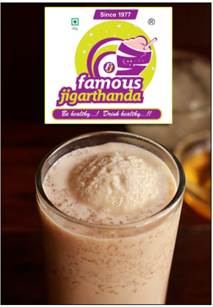

Jigarthanda has a rich, creamy, and cooling taste that instantly refreshes you, especially in Madurai hot weather. The combination of thick milk, almond gum (badam pisin), and flavorful sherbet gives it a sweet, smooth, and slightly chewy texture. Each sip feels heavy yet soothing, almost like a dessert in a glass. The generous topping of homemade ice cream adds a melt-in-the-mouth richness that makes the drink unforgettable. Overall, drinking Jigarthanda in Madurai feels like enjoying a traditional treat that is both filling and uniquely satisfying.
